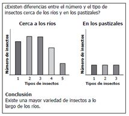
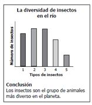
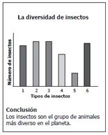
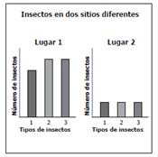

En el año 2002, un grupo de familias llegó a un parque natural y se quedó a vivir llevando gatos como mascotas. En el 2006, una enfermedad redujo el número de gatos. La siguiente gráfica muestra el número de aves dentro del parque durante diez años.
a. Aumentaría el doble porque ahora tendrían más espacio. b. Se reduciría porque no tendrían alimento. c. Aumentaría hasta llegar al valor que tenía antes de que llegaran los gatos. d. Se reduciría hasta llegar a la extinción.
El conjunto de factores bióticos de un ecosistema, recibe el nombre de:
a. Especie b. Biotipo c. Biocenosis d. Biomasa
María y Carlos hicieron una investigación en la que compararon la cantidad y el tipo de insectos que había en dos lugares diferentes. Encontraron que cerca del río había diferentes tipos de insectos y en mayor cantidad que en un pastizal. ¿Cuál de las siguientes carteleras deberían presentar María y Carlos para mostrar su investigación?
a.  b.  c.  d. 
La relación en la cual un organismo se beneficia de otro, sin que el otro se beneficie o se perjudique, recibe el nombre de:
a. Comensalismo b. Parasitismo c. Mutualismo d. Amensalismo
Alejandra leyó que en la época de los dinosaurios una gran nube de polvo cubrió el cielo e impidió la entrada de la luz al planeta. La mayoría de plantas murió con el paso del tiempo, al no recibir la luz del Sol. En los meses siguientes desaparecieron animales herbívoros y posteriormente desaparecieron los carnívoros. De esta información, ¿cuál conclusión puede sacar Alejandra?
a. Los animales son la base de la cadena alimentaria y sin ellos las plantas desaparecen. b. Los carnívoros necesitan recibir la luz directa del Sol para sobrevivir más que las plantas c. Los animales herbívoros, no se vieron afectados por la ausencia de luz. d. Las plantas son la base de la cadena alimentaria y sin ellas los animales carnívoros también mueren